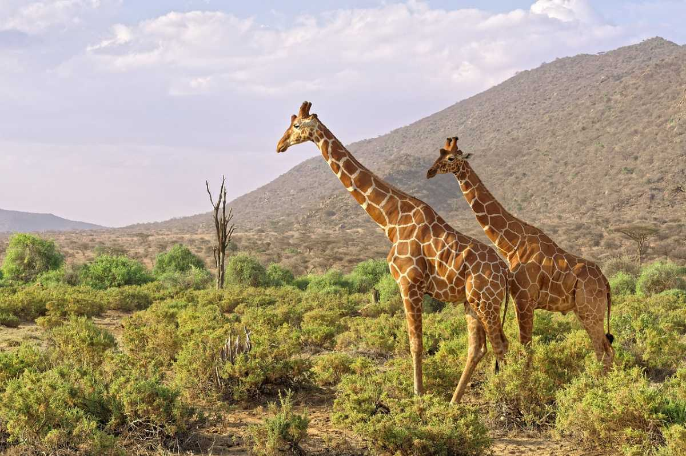

-
1. SAMBURU-NATIONAL-RESERVE
"Samburu National Reserve, a premier safari destination in East Africa, is home to a diverse array of rare wildlife species.The reserve is famous for its Grevy Zebras, Somali Ostriches, and thriving elephant population. Large predators like lions and leopards roam the reserve,making it a thrilling destination for wildlife enthusiasts. With over 450 bird species Samburu offers an unforgettable safari experience in its pristine wilderness.
Learn more -
2. The Kenya Amboseli

Amboseli National Park is in southern Kenya. It’s known for its large elephant herds and views of immense Mount Kilimanjaro, across the border in Tanzania.Observation Hill offers panoramas of the peak and the park’s plains and swamps.Varied wildlife includes giraffes zebras, cheetahs and hundreds of bird species.The western section is dominated by vast Lake Amboseli, which is dry outside the rainy season.
Learn more -
3. The Lake Victoria centre

Lake Victoria, the largest lake in Africa, borders Kenya, Uganda, and Tanzania. On the Kenyan side, Lake Victoria in Kenya,the lakeside city of Kisumu, offers visitors a chance to explore the lake’s vast waters and and surrounding scenery. The lake is a critical resource for the local communities and a hub for fishing and boat tours. Nearby tourist attractions include the Kisumu Impala Sanctuary and Dunga Hill Camp, offering unique wildlife experiences and stunning sunset views over the lake. of the finest wines in Europe, Alsace offers a unique and memorable
Learn more